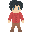
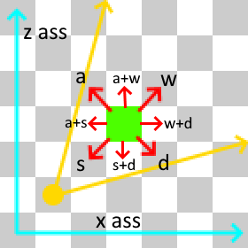
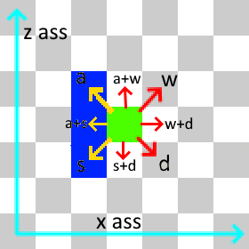

How does the player look?
The player has black hair, a red shirt and brown pants. Jesper made the sprites for the player. You can see the sprites below.

How does the player move and how does the collision work?
The player uses "wasd" to move, the game is shown with an isometric view. And when you press a button the player moves in the x and z axis at the same time. Yelow is the camera, green is the player and red is the direction where the player can move to.

For the collision raycasts ar used. The raycast makes a line from a player in the dirrection that its moving and if theres something there than the player cant move in that dirrection. The blue squares are the walls, the green square is the player, the yelow line is the direction the player cant move to and the red line is the direction where the player can move to.

Powerups and attacks.
We where planing to add multiple powerups and attacks but we didnt finish it in time. Ferre made a list of multiple powerups and attacks. You can see that list below.
Temporary upgrades
Melee
Ranged
Magic
Defensive
Movement
Active
Mechanics: Functions via a cooldown system (mage is an exception, functions via mana.). Cooldowns do not go down unless the player is in combat. (Prevents repeated use of “Medical Supply” between rooms)
Melee:
-Melee skills are special in that they do not have a cooldown but instead require a specific action from the player to use.
-Cyclone Blade: After holding down the attack button for 2 seconds the player spins around with their weapon causing everything in a medium area around the player to take damage that scales with the players’ strength stat.
-Spatial Awareness: The player must stand still before using this attack. When the user presses the attack button after having stood still the player delivers a quick attack to every enemy in a certain area, which grows the longer the user stands still.
-Blade Flurry: If the player presses the attack button while in the dash animation and the player bumps into an enemy while dashing, the player will deliver 5 strikes to that enemy.
Ranged:
-Hunting Target: After pressing this ability the players next ranged projectile will apply a target to the enemy it hits, which increases damage dealt to that enemy by 1,5 times, but will decrease damage dealt to every other enemy by 0,8 times until the targeted enemy dies.
-A Helping Hand: For 10 seconds the user fires an extra projectile every 3 shots.
-Hell Rain: The user fires projectiles into the air and creates a damage over time area where the projectiles rain down.
Magic:
(Mage has 5 spells, gets 2 random spells when starting a run and can at maximum have 3 spells. If the mage is offered a spell when they have 3 already they can choose to exchange one of their spells.)
-Kagutsuchi’s Fury: Player fires a big ball of fire forward which explodes on contact with an enemy and deals massive AoE damage. (High mana cost)
-Raijin’s Bolt: Player fires a low-medium damage lightning bolt that jumps between enemies up to a maximum of 4 enemies. (Low mana cost)
-Fujin’s Gust: Player releases a blast of wind dealing medium damage and knocking non-boss enemies back. If an enemy hits the wall they take extra damage. (Medium mana cost)
-Kuraokami’s Domain: Player creates an area of ice in which enemies will take low chip damage and will be slowed/frozen. (Medium mana cost)
-Ninigi’s Fist: Player creates a giant fist-shaped rock around their hand and punches forward dealing big close-range damage. (Medium mana cost)
Defensive:
-Parrying Stance: After using this ability the user will take a defensive stance for 1 second. If the user is hit during that second they appear behind the enemy that hit them and deal a powerful strike scaling with strength (not reccomended for mage/ranged builds).
-Heroic Determination: Player gains a shield that reduces damage taken by 33% for 10 seconds.
-Medical Supply: Heals the player for 25% of their max health. Long cooldown.
Movement:
-Strange Device: Changes your Dash into a teleport for 10 seconds. (Blade Flurry skill is unusable when this is active.)
-Agil-Pill: Movement Speed increases by 33% for 10 seconds.
-Reposition: Teleport back to the middle of the room upon use.
Passive
Melee:
-Bloodlust: When an enemy is killed with a melee attack the players’ strength stat increases for 3 seconds.
-Glass Cannon: Strength increases drastically, but the player loses 66% of their max health.
-Empowered: The players’ strength increases by a small amount. (This upgrade can be found and picked up up to 3 times.
Ranged:
-Sniper: Damage and projectile speed increase dramatically, but firerate is lowered.
-Trigger Finger: Firerate gets boosted, but projectile spread is increased a lot.
-Fast Hands: Dexterity stat increase (can be stacked up to 3 times)
Magic:
-Overcast: Great magic damage increase, but mana cost increases.
-Absorb mana: Recover your mana by getting close to an enemy.
-Bookworm: Intelligence stat increase (can be stacked up to 3 times)
Defensive:
-Tank: Health increase at the cost of lowered movement.
-Blessed Aura: The damage from the first hit you take per 3 rooms is negated.
-Mitotic Regen: Health regen boost (can be stacked up to 3 times)
Movement:
-Sprinter: Dash distance increases by 33%.
-Agile n Fragile: Movement speed increases a good amount, 10% chance to dodge damage from an attack. Health lowered drastically.
-Strong Legs: Small movement speed increase. (can be stacked up to 3 times)
What classes are there?
When a player wants to start the game it can choose between a day scene and a night scene. Then it can choose a class. There are three classes a mage, a archer and a sword user. The mage isnt in the game yet.
How do the weapons work and how can the player use them?
Each weapon consists of three parts that have there own stats. Those stats determine the damage, the knockback, the energie cost and some other stuff. The stats of those three parts get combined and are the stats of the weapon. When a player uses a weapon the energie cost gets removed from the players energie and when the player doesnt have enough energie left then the player cant attack. The energie slowly regenerates when the player isnt attacking.
How do the melee attacks work?